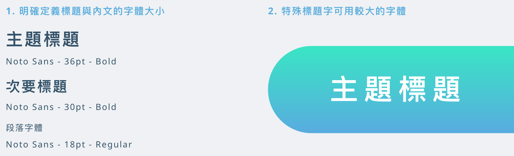
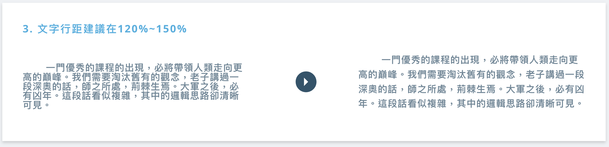
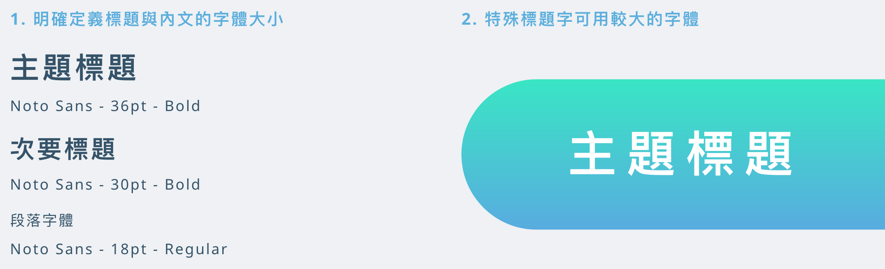

關於網頁設計那黨事 文字大小設計 1. 明確定義標題與內文的字體大小 2. 特殊標題字可用較大的字體 3. 文字行距建議在120%~150% 4. 文字行寬建議在45~90個字中 5. 內文字體保持在 14-24 pt間  
文字大小設計 1. 明確定義標題與內文的字體大小 2. 特殊標題字可用較大的字體 3. 文字行距建議在120%~150% 4. 文字行寬建議在45~90個字中 5. 內文字體保持在 14-24 pt間 